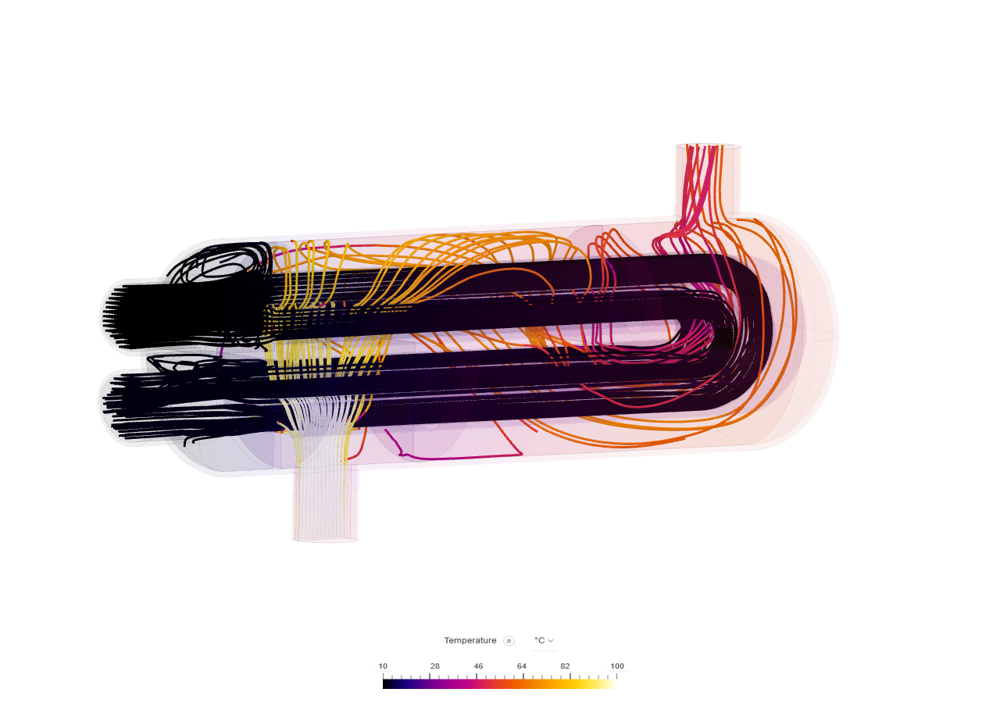
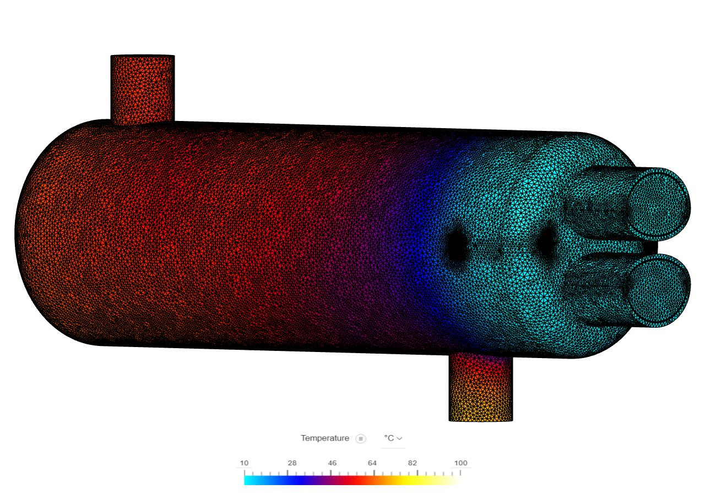

Optimisation of a shell-and-tube heat exchanger fluid domain to maximise heat transfer efficiency while minimising pressure drop — achieved through modified baffle geometry and parametric CFD simulation.

To analyse the fluid domain of a heat exchanger and optimise design parameters to maximise heat transfer efficiency while minimising pressure drop.
The initial design suffered from uneven flow distribution, creating dead zones where heat transfer was negligible. The core challenge was to modify the baffle geometry to induce better mixing without significantly increasing pumping power.
